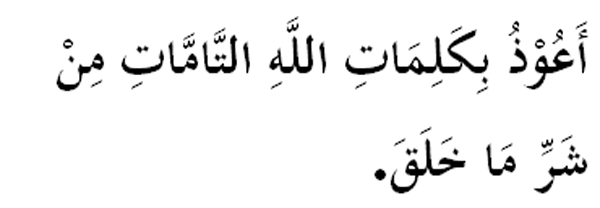

|

Terjemahan "Aku berlindung (di bawah naungan) kalimah-kalimah Allah (SWT) yang sempurna dan selamat dari segala kejahatan makhluk yang jahat." Fadhilat Wirid Daripada Abu Hurairah (RA): "Sesiapa yang membacanya (bacaan di atas) pada waktu pagi dan petang sebanyak tiga kali, nescaya tidak dibahayakan oleh segala jenis racun atau jenis sengat binatang yang bisa." (Riwayat Ibn Hibban) |